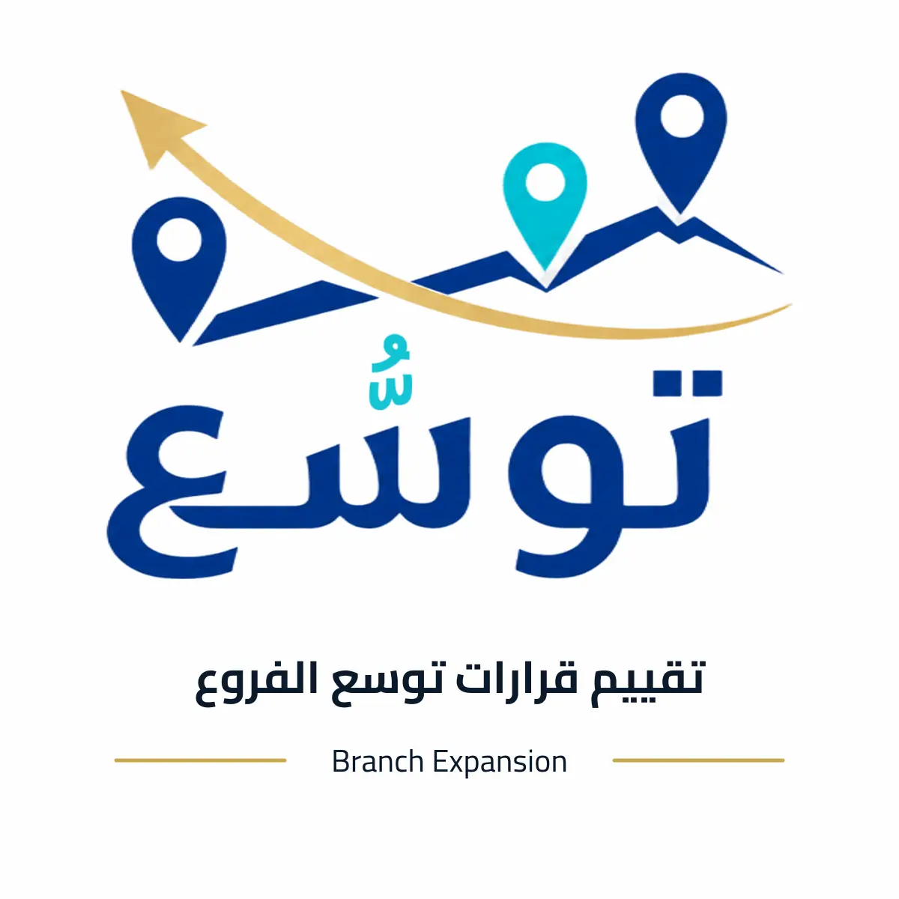
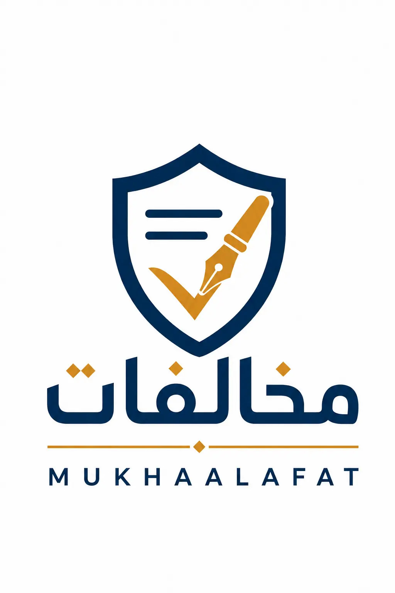

فحص صحة الحوكمة
قياس وضوح الأدوار والقرارات والضبط الداخلي، ثم ترتيب فجوات الحوكمة حسب الأولوية.
- المخرج
- درجة تفصيلية، فجوات وأولويات معالجة
- مناسب لـ
- الملاك والشركاء والمنشآت النامية
نجمع بين الخبرة الاستشارية والأدوات الرقمية لخدمة الملاك ومجالس الإدارة والقيادات في الحوكمة، الصلاحيات، المخاطر، النمو، الشراكات وإعادة الهيكلة.
اختر نقطة البداية، وحتى تربطك بالأداة أو الخدمة أو المنصة المناسبة.
تقييم الأداء، تنظيم الاجتماعات، وتحسين جودة القرارات واللجان.
شاهد الحلول 02⌘توضيح الأدوار، الاعتمادات، وعلاقة الملاك بالإدارة التنفيذية.
شاهد الحلول 03◇كشف النقاط الحمراء وترتيب المسؤوليات وخطط المعالجة والمتابعة.
شاهد الحلول 04↗اختبار الفرع الجديد ومسارات النمو وجاهزية المنشأة للاستثمار.
شاهد الحلول 05∞توزيع الأدوار والحصص والقرارات قبل بدء الشراكة أو دخول مستثمر.
شاهد الحلول 06◎مقارنة خيارات الدمج والفصل والتحويل والتصفية الاختيارية.
شاهد الحلولالمعرفة العامة والعينات متاحة للاطلاع. التقييمات، التقارير، الحفظ والاستخدام الكامل تقدم كمنتجات مدفوعة.
قياس وضوح الأدوار والقرارات والضبط الداخلي، ثم ترتيب فجوات الحوكمة حسب الأولوية.

تقييم منظم لأداء المجلس وممارساته، يحول النتائج إلى نقاط قوة وأولويات تطوير قابلة للنقاش.
بناء سجل حي للمخاطر، يربط الاحتمال والأثر بالمسؤول وخطة المعالجة وحالة المتابعة.
تنظيم من يوصي ويراجع ويعتمد وينفذ في القرارات الإدارية والمالية والتشغيلية.

مقارنة مسارات النمو وتحديد الاتجاه الأنسب وحجم التغيير وفق جاهزية المنشأة.

تقييم مخاطر واشتراطات الفرع الجديد قبل توقيع العقد والالتزام بالموقع.
فحص أولي لجاهزية الاستحواذ أو الاندماج، وإبراز الفجوات والإشارات الحمراء قبل التفاوض.

تقدير المساهمات وتوزيع الحصص، وكشف البنود التي تحتاج اتفاقا واضحا قبل بدء الشراكة.

تقدير استرشادي لقيمة المنشأة وقياس جاهزيتها قبل دخول مستثمر أو مفاوضات البيع والشراكة.
مراجعة الإعلان وفق نوع الحملة والمحتوى والقنوات، وتحديد النقاط التي تحتاج تعديلا.

ترتيب بيانات المخالفة وحساب المهلة وتجهيز نص الاعتراض ومعرفة مسار التقديم.

تحديد مهام المصفي ومراحل التصفية والوثائق والمخرجات المطلوبة حتى إقفال الشركة.
نبدأ بتشخيص الوضع، ثم نصمم المخرج ونساند المنشأة في التطبيق حسب النطاق المتفق عليه.
قراءة وضع الشركاء والإدارة والصلاحيات والقرارات والوثائق ومواطن التعطل.
بناء نظام عملي للقرار يشمل الهيكل ومصفوفة الصلاحيات والسياسات وسجل القرارات.
تنظيم أعمال المجلس واللجان، ورفع جودة النقاش والقرار والمتابعة والتقييم.
فصل دور المالك عن المدير، وتنظيم العلاقة بين العائلة والملكية والإدارة.
كشف المخاطر الإدارية والحوكمية، وتحديد المسؤوليات وخطط المعالجة والمتابعة.
تقييم التوسع ورفع جاهزية المنشأة لدخول مستثمر أو شريك أو تنفيذ استحواذ.
مراجعة الكيانات والأنشطة والعقود والتراخيص، ثم مقارنة مسارات الدمج أو الفصل أو التحويل.
ترتيب الملف والقرارات ونطاق العمل والمسار النظامي للشركات التي ترغب في الإغلاق المنظم.
مساندة دورية للقيادة لمتابعة القرارات والأولويات والمخاطر وفرص تطوير الأعمال.
من جلسة مركزة إلى دور مستمر داخل بيئة القرار.
حلول لاستخدام المنشأة وفريقها، تقدم بعرض تجريبي ثم ترخيص يتناسب مع نطاق الاستخدام.
إدارة اجتماعات مجالس الإدارة والجمعيات واللجان من الدعوة وجدول الأعمال حتى المحضر والقرارات والأرشيف.
معرفة وأدوات وتجارب تساعد الشركات العائلية على تنظيم العلاقة بين العائلة والملكية والإدارة والاستعداد للانتقال بين الأجيال.
نصمم للشركات والجمعيات رحلات تجمع المعارض الدولية والزيارات القطاعية واللقاءات المهنية، وتحول الرحلة إلى معرفة تطبيقية وعلاقات وفرص تعاون.
مواد عامة ونماذج تعريفية تبين منهج العمل، بينما تبقى التقييمات والتقارير المخصصة ضمن المنتجات المدفوعة.
نماذج مختارة من أعمال سابقة في الجاهزية المؤسسية والتطوير والاستثمار والحوكمة.
إعادة هيكلة وبناء بنية مؤسسية ودراسات توسع وشراكات في قطاع التعليم.
تطوير برنامج وقفي وبناء مصادر تمويل وتحسين المتابعة والتقارير الشهرية.
تحويل برنامج مساهمات إلى مورد مستدام عبر الاستقطاب والبيانات والحوكمة التشغيلية.
ربط القرارات بين مجلس النظارة ولجنة الاستثمار ورفع توصيات مدعومة بالتحليل.


نرتب الطريق حتى تصل الأعمال
بدأت حتى من ملاحظة متكررة: منشآت تملك فرصا جيدة، لكن القرار فيها غير موثق، أو الصلاحيات متداخلة، أو النمو أسرع من النظام الداخلي. لذلك نجمع بين الاستشارة والأداة والتنفيذ حتى يتحول التعقيد إلى قرار منظم ومخرج قابل للتطبيق.
اختر الحل، واكتب وصفا مختصرا للوضع والنتيجة التي تريدها. نحدد بعدها المسار الأنسب: أداة، جلسة، تقييم مهني، منصة أو مشروع متكامل.